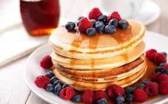

Fluffy Pancakes!

Description
Tall and fluffy. These pancakes are just right.
Topped with strawberries and whipped cream,
they are impossible to resist.
Ingredients (yields 4 servings)
- ¾ cup milk
- 2 tablespoons white vinegar
- 1 cup all-purpose flour
- 2 tablespoons white sugar
- 1 teaspoon baking powder
- ½ teaspoon baking soda
- ½ teaspoon salt
- 1 egg
- 2 tablespoons butter, melted
- cooking spray
Steps
-
Combine milk with vinegar in a medium bowl and set aside
for 5 minutes to "sour".
-
Combine flour, sugar, baking powder, baking soda, and salt
in a large mixing bowl. Whisk egg and butter into "soured" milk.
Pour the flour mixture into the wet ingredients and whisk until
lumps are gone.
-
Heat a large skillet over medium heat, and coat with cooking spray.
Pour 1/4 cupfuls of batter onto the skillet, and cook until bubbles
appear on the surface. Flip with a spatula, and cook until browned
on the other side.